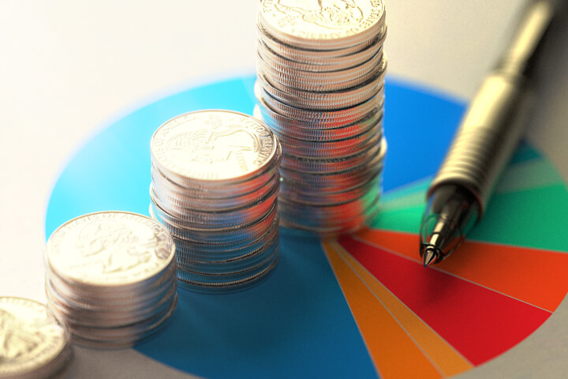

O que é Taxa Selic, Inflação e Câmbio
Os três pilares da macroeconomia individual e nacional — Taxa Selic, Inflação e Câmbio — funcionam de forma interligada. O movimento em uma dessas variáveis gera impactos diretos nas demais, afetando desde o poder de compra no supermercado até o rendimento de aplicações financeiras.

1. O que é a Taxa Selic?
A Taxa Selic (Sistema Especial de Liquidação e de Custódia) é a taxa básica de juros da economia brasileira. Ela serve como a referência central para todas as outras taxas cobradas no país, como juros de empréstimos, financiamentos e rendimentos de investimentos.
- Selic Meta: Definida a cada 45 dias pelo Copom (Comitê de Política Monetária do Banco Central). É a meta de juros almejada para a economia.
- Selic Over: A taxa efetiva apurada diariamente no mercado interbancário, lastreada em títulos públicos federais.
- Mecanismo de Controle: Quando o Banco Central eleva a Selic, o crédito fica mais caro, desestimulando o consumo e os investimentos das empresas para desacelerar a economia e conter a inflação. Quando reduz a Selic, o crédito fica mais barato, incentivando o consumo e a atividade econômica.
2. O que é Inflação?
A inflação é o aumento generalizado e contínuo dos preços de bens e serviços em uma economia, resultando na perda progressiva do poder de compra da moeda.
- Principais Índices (Brasil):
- IPCA (Índice Nacional de Preços ao Consumidor Amplo): Medido pelo IBGE, é o índice oficial de inflação utilizado pelo Banco Central para fins de cumprimento das metas monetárias.
- IGP-M (Índice Geral de Preços - Mercado): Calculado pela FGV, muito utilizado no reajuste de contratos de aluguel e energia elétrica.
- Causas da Inflação:
- Inflação de Demanda: A procura por produtos/serviços supera a capacidade de oferta do mercado.
- Inflação de Oferta (Custo): Aumento dos custos de produção (ex.: alta do petróleo, seca que afeta a safra agrícola ou escassez de matérias-primas).
- Inflação Inercial: Indexação automática de preços e salários com base na inflação passada.
3. O que é Câmbio?
O câmbio refere-se ao preço relativo entre duas moedas distintas — no contexto brasileiro, expressa quanto em Reais (BRL) é necessário para comprar uma unidade de moeda estrangeira, tipicamente o Dólar americano (USD).
- Regime Cambial no Brasil: O país adota o regime de câmbio flutuante, onde a taxa é determinada pela oferta e demanda no mercado de divisas, com intervenções eventuais do Banco Central (leilões de venda de reservas ou contratos de swap) para suavizar volatilidades excessivas.
- Impactos da Desvalorização da Moeda Local (Dólar mais alto):
- Exportações: Beneficia exportadores (commodities agrícolas e minerais), tornando os produtos nacionais mais competitivos no exterior.
- Inflação Importada: Eleva o custo de insumos, fertilizantes, combustíveis e componentes importados, pressionando os preços internos e gerando repasse inflacionário ao consumidor final.
4. A Dinâmica de Interconexão
A relação entre as três variáveis pode ser resumida na dinâmica de controle econômico adotada pelas autoridades monetárias:
- Juros vs. Inflação: Juros mais altos (Selic elevada) reduzem a demanda agregada, ajudando a conter a alta do IPCA.
- Juros vs. Câmbio: Taxas de juros mais altas aumentam o diferencial de juros em relação aos mercados desenvolvidos, atraindo capital estrangeiro para a renda fixa nacional. O aumento da entrada de dólares valoriza o Real, o que por sua vez reduz a pressão sobre insumos importados e auxilia no controle da inflação.